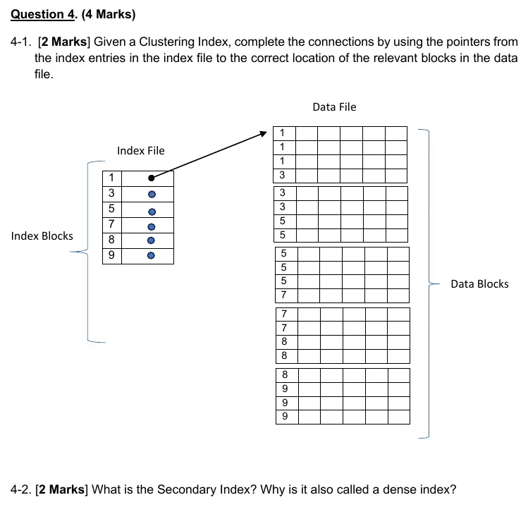
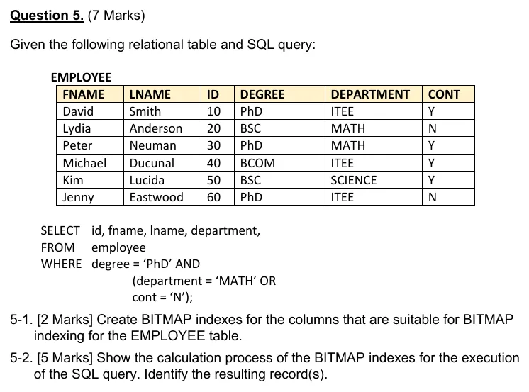
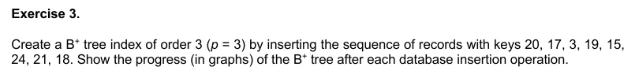
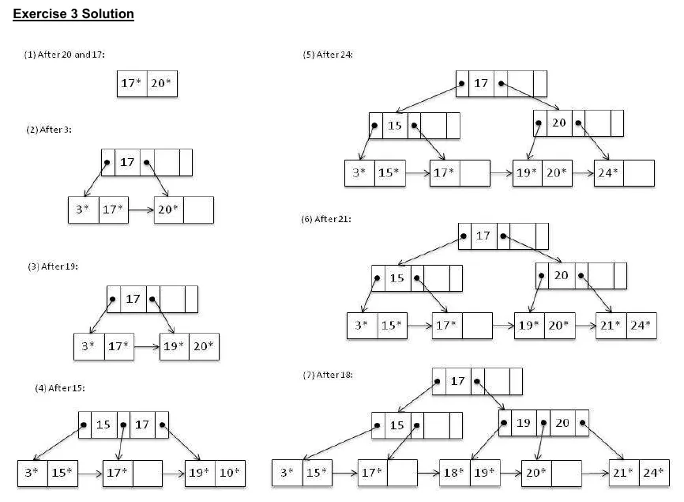
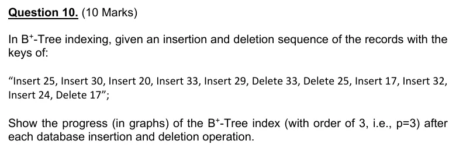
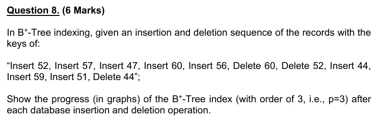
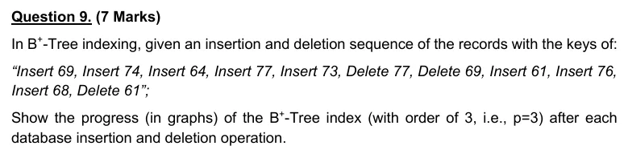
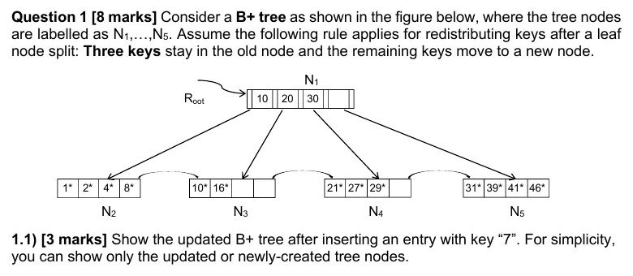

第 1 章 · WEEK 6 · DATABASE INDEXING
索引与 B+ 树
Week 6 整节课：为什么要索引、各种索引类型、多层索引，最后是每年必考的 B+ 树插入和删除。
1 为什么要索引
索引（index）是一个辅助文件，里面是一条条 <字段值, 指向记录的指针>，按字段值排好序。它的作用和书后面的索引一样：先在索引里找到“页码”，再直接翻到那一页，不用把整本书从头读到尾。建索引的那个字段叫 search key。
没有索引时只能 linear search（从头扫到尾）。课件的例子：Student 表有 30,000 条记录，查 First_Name = 'David'，即使第一条就是 David 也得把 30,000 条全部看完，因为不知道后面还有没有。

细化讲解
课件里的两个数字例子
连接也受益。Worker 表 100 条，WorkerSkill 表 500 条（外键指向 Worker.Name）。做连接时要扫多少条？不是 100 × 500 = 50,000，而是正好 500 条，因为每条 WorkerSkill 通过外键只对应一个 Worker（课件原话：the foreign key dominates the join）。
Linear search 有多慢。假设每秒能扫 105 条记录，一家银行有 107 个账户，每个账户每天一笔交易。每笔交易都线性扫描一次，一天的交易要 107 × 107 ÷ 105 = 109 秒，约 31 年。
三种查找方式的块访问次数（课件第 12 页）
Employee 表按 SSN 排序，r = 10,000 条记录，块大小 B = 512 bytes，每条记录 250 bytes。
| 数据文件 | 索引文件 | |
|---|---|---|
| 一项的大小 | R = 250 bytes | key 9 bytes + 指针 7 bytes = 16 bytes |
| Blocking factor（每块放几项） | ⌊512 ÷ 250⌋ = 2 | ⌊512 ÷ 16⌋ = 32 |
| 一共多少块 | 10,000 ÷ 2 = 5,000 | ⌈10,000 ÷ 32⌉ = 313 |
- 在数据文件上 linear search：平均 b/2 = 2,500 次块访问。
- 在有序数据文件上 binary search：log2 5,000 ≈ 13 次。
- 在索引文件上 binary search：log2 313 ≈ 9 次，再加 1 次读数据块，共 10 次。
索引更快的原因很朴素：索引项比记录小得多，一个块能放的项更多，所以索引文件的块数少得多。
2 单层索引的三种类型
先分清两个词。Sparse（稀疏）index：只给一部分值建索引项，索引项比记录少。Dense（稠密）index：每条记录都有一个索引项。
用哪种，取决于数据文件本身有没有排序：
| 数据文件 | 建在什么字段上 | 索引项有多少 | Sparse / Dense | |
|---|---|---|---|---|
| Primary index | 有序（sequential file） | 排序字段，而且是 key（值不重复） | 每个数据块一项，记这个块第一条记录的 key（叫 block anchor） | Sparse |
| Clustering index | 有序 | 排序字段，但不是 key（值会重复） | 每个不同的值一项，指向第一个含这个值的数据块 | Sparse |
| Secondary index | 无序（heap file） | key 或非 key 都可以 | 每条记录一项 | Dense |
有序文件可以用稀疏索引，是因为数据本身排好了：找到所在的块以后，顺着往下读就行。无序文件做不到，所以每条记录都得有一项。
细化讲解
一个例子把三种分清
假设学生文件每个块放 3 条记录。
- 文件按学号（不重复）排序 → 给学号建的是 primary index：每个块记一项“这个块的第一个学号 → 块地址”。
- 文件按专业（会重复）排序 → 给专业建的是 clustering index：每个专业记一项“IT → 第一个出现 IT 的块”。
- 文件没按邮箱排序，却想按邮箱查 → 只能建 secondary index：每条记录一项“邮箱 → 这条记录的位置”。
Clustering index 的问题（课件第 19 页）
数据是物理有序的，所以插入和删除记录很麻烦（primary index 也有同样的问题）。缓解办法：给每个不同的值预留一整个块（或一组相邻的块），把值相同的记录都放在一起。
文件类型和索引类型的对应（课件第 14 页）
- Sequential file（有序）→ sparse index：primary、clustering。
- Unordered file（heap）→ dense index：secondary、树索引、bitmap。
- Hash file → hash index。
真题：2025 Q4（4 分）

AI 讲解，非官方2025 Q4 两问
4-1 Clustering index 里每个不同的值画一根箭头，指向数据文件里第一次出现这个值的那个块。不要给每条记录都画箭头，那是 dense index 的画法。依据是课件第 17–18 页。
4-2 可以这样写：
A secondary index is defined on an unordered data file (heap file); it can be defined on a key or a non-key field. Because the records are not physically ordered by the indexed field, the index must include one entry for every record in the data file. Therefore it is a dense index.
3 Hash 索引和 Bitmap 索引
Hash index：用 hash function 把 key 值算成 bucket 编号，记录就放在那个 bucket 里。等值查询（point query）极快，但不保持顺序，所以不适合范围查询。
Bitmap index：给一列的每个不同的值建一条位图（bit vector）。位图的长度等于表的行数，第 i 位是 1 表示第 i 行是这个值，否则是 0。多个条件的 AND、OR 直接变成位运算。
Bitmap 适合三种情况：表很大而这一列的不同值很少（low cardinality）；查询经常把多个条件用 AND、OR 组合；这一列很少更新。
真题：2023 Q5（7 分）

AI 讲解，非官方2023 Q5 两问
5-1 哪些列适合建 bitmap。只挑不同值很少的列：DEGREE（PhD、BSC、BCOM）、DEPARTMENT（ITEE、MATH、SCIENCE）、CONT（Y、N）。ID 和姓名每行都不同，不适合。每个值一条位图：
| DEGREE | 位图 | DEPARTMENT | 位图 | CONT | 位图 |
|---|---|---|---|---|---|
| PhD | 1 0 1 0 0 1 | ITEE | 1 0 0 1 0 1 | Y | 1 0 1 1 1 0 |
| BSC | 0 1 0 0 1 0 | MATH | 0 1 1 0 0 0 | N | 0 1 0 0 0 1 |
| BCOM | 0 0 0 1 0 0 | SCIENCE | 0 0 0 0 1 0 |
检查方法：同一列的几条位图竖着看，每一行应该恰好有一个 1。
5-2 计算查询。条件是 degree = 'PhD' AND (department = 'MATH' OR cont = 'N')。先算括号里的 OR，再和 PhD 做 AND。下面的组件默认就是这道题，可以改条件再试：
默认条件的结果是 0 0 1 0 0 1，也就是第 3 行 (30, Peter, Neuman) 和第 6 行 (60, Jenny, Eastwood)。答题时要写出位运算的过程，并指出是哪几条记录。
4 多层索引和搜索树
单层索引本身也是一个有序文件，所以可以给索引再建一层索引，一层层往上，直到最顶层能放进一个块。这就是 multi-level index，形状是一棵树。
课件的数字（第 29 页）：1,000,000 条记录，每个数据块放 10 条，每个索引块放 100 项。
| 方法 | 读多少块 | 怎么算 |
|---|---|---|
| 从头扫到尾 | 100,000 | 1,000,000 ÷ 10 |
| 在有序数据文件上二分 | 17 | log2 100,000 |
| 在单层索引上二分 | 10 | log2 (100,000 ÷ 100) |
| 多层索引（树） | 3 | log100 100,000，就是树的高度 |
通过索引树访问一条数据，总共是树高 + 1 次 I/O（最后 1 次读数据块），这里是 3 + 1 = 4。树的每一层就是一次 I/O，所以树越矮越好。
细化讲解
搜索树的词汇（课件第 30 页）
- Node：一个索引块。Root：最先读的那个块。Leaf：最底层的节点。
- Order：一个节点最多有几棵子树。
- Height：从根到叶的层数，等于一次查找的 I/O 次数。
- Balanced tree：所有叶子在同一层，所以每条查找路径一样长。
插入和删除后树需要维护，保持子树之间有序。
范围查询的问题（第 31 页）：“找出所有 gpa > 3.0 的学生”。如果数据有序，可以先二分找到第一个，再顺着往后扫；但二分查找本身代价不低。解决的思路还是建索引，这引出了 B-tree 和 B+-tree。
5 B-tree 和 B+-tree
B-tree of order p：每个节点最多 p 个子树指针，至少 ⌈p/2⌉ 个；节点里的 key 从小到大排列；左子树放小于等于的值，右子树放大于的值；所有叶子在同一层。B-tree 的每个节点里，key 旁边都带着数据指针。
B+-tree 改了一点：数据指针只放在叶子里，内部节点只放用来指路的 key；所有叶子横向连成一条链。它是关系数据库的默认索引。
| B-tree | B+-tree | |
|---|---|---|
| 数据指针（图里的 *） | 每个节点都有 | 只有叶子有 |
| 一个 key 出现几次 | 整棵树里只出现一次 | 叶子里一定有；上层可能再出现一次当路标 |
| 叶子之间 | 不相连 | 横向连成链，适合范围查询 |
| 一次查找的 I/O | 可能在中途就找到 | 永远走到叶子，都等于树高 |
| 相同点 | 都是平衡树，所有分支一样高 | |
本课程 B+ 树的约定
B+ 树在不同教材里细节不一样，考试按课件的画法给分。下面每一条都来自课件的文字和图。
| 项目 | 本课程的约定 | 出处 |
|---|---|---|
| 阶 order \(p\) | 一个节点最多 \(p\) 个指针，所以最多 \(p-1\) 个 key。课件的图里叶子也是最多 \(p-1\) 个 key。 | 第 32、39 页 |
| 下限 | 非根节点至少 \(\lceil p/2 \rceil\) 个指针。\(p=3\) 时叶子至少 1 个 key。 | 第 32 页 |
| 怎么走 | 要找的值 ≤ 路标往左，> 路标往右。路标等于左边子树里最大的 key。 | 第 32 页文字，第 39–45 页的图 |
| 叶子分裂 | \(p=3\) 时左 2 右 1；把左叶最大的 key 复制到父节点。 | 第 39–40 页 |
| 内部节点分裂 | 中间的 key 上移到上一层，不留在本层。 | 第 38、40、42 页 |
| 删除后下溢 | 先向左兄弟借；借不到就合并，合并可以一路传到根，树变矮。 | 第 38、44–45 页 |
细化讲解
课件没有写明、由我补充的地方
课件只给了 \(p=3\) 的例子。为了让模拟器和变式题能处理更大的 \(p\)，下面三条是我按课件例子推广的，不是课件原文：
- 一般的 \(p\) 怎么切。叶子溢出时左边留 \(\lceil p/2 \rceil\) 个；内部节点溢出时左边留 \(\lceil (p-1)/2 \rceil\) 个，下一个上移。\(p=3\)、\(p=5\) 时和课件、2022 年卷的图一致；\(p=4\) 时课件没有例子可对照。
- 左边借不到时向右兄弟借。课件只演示了向左借。
- 内部节点下溢。课件第 45 页删除 12 的结果，树直接从 3 层变成 2 层，并给了两种都算对的画法，模拟器复现的是第一种。标准教材在这里通常是向兄弟内部节点借一个孩子，树仍是 3 层。两种都是合法的 B+ 树；考试遇到这种情况，照课件把树压矮更稳。
6 B+ 树查找
从根出发，每到一个节点就拿要找的值和路标比：小于等于往左，大于往右，一直走到叶子。插入和删除的第一步都是这样先找到该去的叶子。递归的次数最多就是树的高度。
在上面这棵树里找 22：根是 [20, 23]，22 比 20 大、不超过 23，走中间；到 [22]，22 ≤ 22，走左边；到叶子 [21*, 22*]，找到。走了 3 层，就是 3 次 I/O。
细化讲解
范围查询（Tutorial 6 Exercise 4）：先按上面的办法找到范围起点所在的叶子，然后顺着叶子之间的箭头一直往右读，不用回到上层。
7 B+ 树插入
插入只有三种情况：
- 叶子有空位：按顺序放进去，结束。
- 叶子满了（overflow）：先想象把 key 硬塞进去，然后从中间切成两个叶子，把左叶最大的 key 复制一份给父节点当路标。
- 父节点也满了：父节点也切开，中间的 key 上移到更上一层。如果切的是根，就新建一个根，树长高一层。
课件例题：依次插入 23, 20, 6, 22, 18, 27, 24, 21, 25（\(p=3\)）
上面四页是课件的官方答案。下面用模拟器把同一个序列一步步重放，每一步高亮发生变化的节点。勾上“显示中间过程”可以看到硬塞、切开这些中间状态。
重点看两步。插入 27：叶子 [22, 23, 27] 分裂后把 23 复制上去，根变成 [18, 20, 23] 也溢出，于是 20 上移成为新根，树从 2 层变成 3 层。插入 25：叶子分裂把 25 复制上去，父节点 [22, 23, 25] 溢出，23 上移进根，根变成 [20, 23]，树高不变。
细化讲解
为什么取“左叶最大值”当路标
路标要满足“≤ 它的都在左边，> 它的都在右边”。分裂后左叶是 [6, 20]、右叶是 [23]，能把它们分开的数就是左叶的最大值 20。所以课件所有图里，每个路标都等于它左边子树的最大 key。可以用这条规律检查自己画的树。
什么时候树会长高
只有根分裂时树才长高。Tutorial 6 Exercise 5(C) 问的就是这个：要让一次插入使树高增加，必须是目标叶子满、它的所有祖先（包括根）也都满，分裂才会一路传到根。
8 B+ 树删除
删除时按这个顺序问自己：
- 找到叶子，把 key 擦掉。
- 叶子里的 key 还够下限吗？够 → 结束。如果擦掉的正好是上层的路标，把路标改成左边子树现在的最大值。
- 不够（underflow）。左兄弟有多余的 key 吗？有 → 借它最大的一个过来，改父节点的路标。结束。
- 借不到 → 和兄弟合并成一个叶子，父节点少一个孩子。父节点如果也下溢，继续向上处理；根只剩一个孩子时根消失，树变矮。
课件例题：依次删除 8, 15, 12（\(p=3\)）
三步正好是三种情况：删 8 后叶子还剩 9，没事；删 15 后叶子空了，向左兄弟 [11, 12] 借 12，父节点路标从 12 改成 11；删 12 后借不到，只能合并，结果树矮了一层。
细化讲解
删除 12 的两种官方结果
课件第 45 页在 “or” 两边各画了一棵树：一种是根 [4, 9]，叶子 [4] [9] [10, 11]；另一种是根 [9, 10]，叶子 [4, 9] [10] [11]。模拟器给出的是第一种。两种都满足：每个节点不超过 2 个 key、路标等于左边子树最大值、叶子在同一层。考试只要画出其中一种合法的树即可。
被删的 key 正好是路标怎么办
例如叶子 [20, 25] 上面的路标是 25，删掉 25 以后叶子变成 [20]。我在这里把路标改成 20，理由是课件所有图里路标都等于左边子树的最大值。课件没有单独演示这种情况。把 25 留着不改，查找照样正确，一般也算对；但后面的插入可能落到不同的叶子，所以选定一种就坚持到底。没把握的地方阅卷时两种是否都给满分，我无法确认。
9 该用哪种索引
| 索引 | 适合 | 不适合 |
|---|---|---|
| B-tree / B+-tree | 保持数据顺序，范围查询和等值查询都行；适合不同值很多（very selective）的字段 | 重复值很多的字段 |
| Hash index | 等值查询（point query） | 范围查询 |
| Primary index | 按主键排序存放的记录 | |
| Clustering index 或 B+-tree | 外键：连接最贵，可以把要连接的记录预先放在一起 | |
| Bitmap index | 不同值很少（low cardinality）的字段，读多写少 | 经常更新的字段 |
| B+-Tree | Bitmap |
|---|---|
| 适合 high-selectivity 列 | 适合 low-selectivity 列 |
| 更新 key 相对便宜 | 更新 key 很贵 |
| 用 OR 的查询效率低 | 用 OR 的查询效率高 |
| 适合 OLTP | 适合 DSS（决策分析） |
细化讲解
什么时候建、什么时候删（课件第 48 页）
建索引或启用索引：字段是 key（主键或候选键）；查询经常在选择条件（等值或范围）或连接里用到这个字段；同一张表的多个字段在不同查询里一起出现。
删索引或停用索引：字段的数据改动很频繁；用这个索引的应用不再运行；批量导入数据时（导完再重建）；索引损坏；索引只是偶尔才用。
10 核心例题 A：Tutorial 6 Exercise 3

先拿纸自己画 7 棵树（20 和 17 算一步），再打开答案对照。
官方答案Tutorial 6 Exercise 3 Solution

解题思路逐步重放（模拟器输出，已和官方答案逐棵核对）
三个关键步：插入 3 时第一次叶子分裂，17 复制上去成为根；插入 24 时叶子分裂把 20 复制上去，根 [15, 17, 20] 溢出，17 上移，树长到 3 层；插入 18 时叶子 [18, 19, 20] 分裂，19 复制上去，右边的内部节点变成 [19, 20]。
11 核心例题 B：2023 Q10（10 分）

这是考试的标准题型：插入和删除混在一起，一共 11 步，每步画一棵树。
AI 讲解，非官方11 步的树和每一步的理由
往年试卷没有官方答案。下面的树由模拟器按第 5 节的约定生成。
- 第 3 步 Insert 20：[20, 25, 30] 溢出，切成 [20, 25] 和 [30]，复制 25 成为根。
- 第 5 步 Insert 29：右叶 [29, 30, 33] 分裂，复制 30，根变成 [25, 30]。
- 第 6 步 Delete 33：叶子空了，向左兄弟 [29, 30] 借 30，路标从 30 改成 29。
- 第 7 步 Delete 25：叶子还剩 [20]。被删的 25 是路标，改成 20。这一步的处理见第 8 节细化讲解里的说明。
- 最终：根 [20, 29]；叶子 [20] → [24, 29] → [30, 32]。
细化讲解


AI 讲解，非官方2024 Q8 的 11 步
最终：根 [47, 56]；叶子 [47] → [51, 56] → [57, 59]。
AI 讲解，非官方2025 Q9 的 11 步
最终：根 [64, 73]；叶子 [64] → [68, 73] → [74, 76]。
2022 Q1：题目自带约定的情况

这道题的树和今年课件的画法不同：每个节点最多 4 个 key；等于路标的值在右边（路标 10 的右边叶子以 10 开头）；题目规定叶子分裂后旧节点留 3 个 key。题目给了图和规则，就按题目的来。模拟器用的是今年课件的约定，所以这道题不用模拟器，下面是手工推导。
AI 讲解，非官方2022 Q1 的两问
1.1 插入 7：7 < 10，进 N2。N2 变成 [1, 2, 4, 7, 8]，5 个 key 溢出。旧节点留 [1, 2, 4]，新节点是 [7, 8]。按原图的画法，路标取新节点的第一个 key 7，复制到根。根变成 [7, 10, 20, 30]，正好放满。
1.2 再插入 36：36 ≥ 30，进 N5。N5 变成 [31, 36, 39, 41, 46]，溢出。旧节点留 [31, 36, 39]，新节点是 [41, 46]，复制 41 到根。根变成 [7, 10, 20, 30, 41]，5 个 key 溢出。中间的 20 上移成为新根，左边内部节点 [7, 10]，右边内部节点 [30, 41]，树长高一层。
没把握的地方这道题没有官方答案。路标取“新节点第一个 key”是我从原图里路标 10 对应叶子 [10, 16] 推断出来的。
12 进阶变式题
三道题难度逐级上升。答案全部由模拟器生成。模拟器先用课件的插入例题、删除例题和 Tutorial 6 Exercise 3 的官方答案逐棵核对过，再用来算这些题。
变式 1 \(p=3\)，会触发根分裂和树变矮
Insert 30, 25, 20, 35, 40, 15, Delete 25, Insert 45, Delete 40, Delete 35, Delete 20, Delete 15
要点：这道题比真题多了内部节点分裂、合并和树高变化。
程序生成的答案变式 1 的 12 步
最终：根 [30]；叶子 [30] → [45]。点“回到单步”并勾上中间过程，可以看每一步的理由。
细化讲解
变式 2 \(p=4\)：每个节点最多 3 个 key，叶子至少 2 个
Insert 3, 29, 26, 7, 11, 45, 22, 33, 18, 37, Delete 22, Delete 7, Delete 45
要点：叶子溢出时有 4 个 key，切成左 2 右 2；会出现向右兄弟借和合并。
程序生成的答案变式 2 的 13 步
最终：根 [11, 26]；叶子 [3, 11] → [18, 26] → [29, 33, 37]。\(p\) 为偶数时内部节点的切法是我补充的约定，见第 5 节。
变式 3 \(p=5\)，从一棵已经放满的树开始
初始：根 [8, 16, 26, 36]；叶子 [2, 4, 6, 8] → [10, 12, 14, 16] → [20, 22, 24, 26] → [30, 32, 34, 36] → [40, 42, 44, 46]。
Insert 15, Delete 16, Delete 14, Delete 36, Delete 24, Delete 12, Delete 10
要点：第一步就让根分裂、树长高；随后的删除会借位、合并，并让树变回 2 层。
程序生成的答案变式 3 的 7 步
最终：根 [6, 15, 26, 34]；叶子 [2, 4, 6] → [8, 15] → [20, 22, 26] → [30, 32, 34] → [40, 42, 44, 46]。
切换到“细化讲解”可以看到 \(p=4\) 和 \(p=5\) 的两道变式题。
13 自己动手：B+ 树模拟器
选一个 \(p\)，输入 key，点插入或删除。每个操作会拆成几个小步，用“上一步”“下一步”前后翻，高亮的是这一步发生变化的节点，下面的文字说明发生了什么。要删除树里已有的 key，也可以直接点树上的那个数字。
焦点在模拟器里时，← → 是上一步和下一步；在 key 输入框里按 Enter 是插入。
14 小测
8 道题，点选项立刻看到对错和解释。答错的题会进首页的错题本。
键盘：← → 在小节之间翻页。